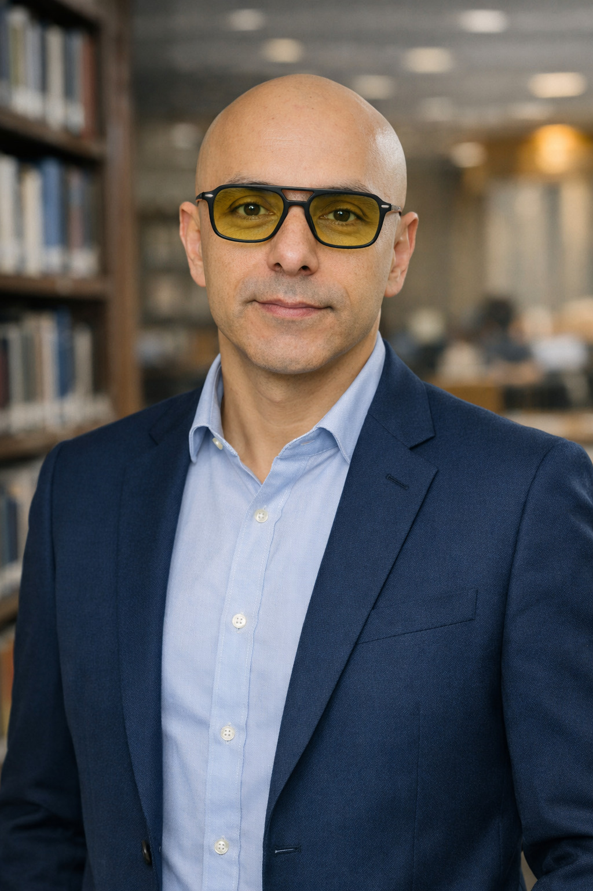

Currículum vitae completo
Jorge Ariel Loaiza Loaiza
Docente universitario en Ciencias Administrativas, Mercadeo, Emprendimiento e Innovación · Doctor en Administración de Empresas · Magíster en Dirección y Administración de Empresas (MBA) · Inglés C1
Burgos, España · Tel. España: +34 613 299 763 · Colombia (solo WhatsApp): +57 315 342 2371
arieljlj@gmail.com · linkedin.com/in/arieljlj · ORCID 0009-0004-8390-5696
NIE con permiso de residencia y trabajo en España · Disponibilidad inmediata

Perfil profesional
Doctor en Administración de Empresas (tesis aprobada por unanimidad, noviembre de 2026) y docente universitario con 13 años de vinculación continua de tiempo completo (2013–2026) en la Corporación de Estudios Tecnológicos del Norte del Valle – COTECNOVA, con experiencia acreditada orientando asignaturas del área organizacional y administrativa (Psicología Organizacional, Talento Humano, Liderazgo, Iniciativa Empresarial, Creatividad, Emprendimiento Social, Administración y Gerencia de Ventas, Metodología de la Investigación) y del núcleo de mercadeo y estrategia. Magíster en Dirección y Administración de Empresas (UNIR, España), convalidado en Colombia (MEN, Res. 004383 de 2024). Residente en Burgos, España, con NIE y permiso de residencia y trabajo, y disponibilidad inmediata.
Entre 2023 y 2026 estuvo adscrito al proceso de Investigación, donde coordinó actividades de investigación institucional y dirigió y asesoró proyectos de investigación y trabajos de grado. Es investigador reconocido por Minciencias (categoría Estudiante de Doctorado) y continúa vinculado al grupo de investigación Dinámica Empresarial (categoría C). Su ponencia sobre estilos de liderazgo y dinámicas intergeneracionales fue elegida mejor ponencia de su mesa en el IV Congreso Internacional de Investigación Aplicada en Ciencias Económico-Administrativas (UJED, México, 2026). Suma 9 años de experiencia profesional como Director de Mercadeo institucional (2013–2022), con dirección de proyectos estratégicos de posicionamiento, y experiencia en asesoría y capacitación a PyMEs. Inglés C1 certificado (APTIS, 2025).
Formación académica
- Doctor en Administración de Empresas · Universidad de Investigación e Innovación de México (UIIX) — 2026
- Programa con RVOE N.° 2022P05045 (SEP, Morelos). Tesis doctoral: "Modelo de fortalecimiento de la Intención Emprendedora de los Estudiantes Universitarios Latinoamericanos en las instituciones acreditadas por ACBSP para el fortalecimiento del ecosistema en Colombia, durante el período 2015-2026". Defendida y aprobada por unanimidad el 19 de noviembre de 2026. Título en trámite de expedición.
- Máster en Dirección y Administración de Empresas (MBA) · Universidad Internacional de La Rioja (UNIR), España — 2023
- Énfasis en Transformación Digital y Business Intelligence. Convalidado en Colombia: MEN, Resolución 004383 de 2024. Media de expediente 8,73/10 (Notable); 10/10 en Marketing Integral. TFM aplicado en una organización real (COTECNOVA): mejora del proceso de comunicación para la gestión de relaciones con grupos de interés.
- Especialista en Gerencia del Talento Humano · Universidad Pontificia Bolivariana (UPB) — 2015
- Especialización Tecnológica en Comercio Electrónico · SENA — 2012
- Administrador de Mercadeo, Publicidad y Ventas · Fundación Universitaria del Área Andina — 2011
Experiencia docente universitaria
- Docente de Tiempo Completo · COTECNOVA — Cartago, Valle del Cauca — 2013 – octubre de 2026
- Vinculación continua y verificable desde el segundo semestre de 2013 hasta el 31 de octubre de 2026, fecha en que finalizó por traslado de residencia a España (Constancia N.° 064-2026, Rectoría). Durante sus últimos años estuvo adscrito al proceso de Investigación.
Asignaturas del área organizacional y administrativa: Psicología Organizacional (2016, 2018, 2022), Talento Humano (2016, 2018, 2020), Liderazgo — electiva sociohumanística (2023, 2024), Iniciativa Empresarial (2024), Creatividad (2024, 2025), Emprendimiento Social (2025, 2026), Administración de Ventas (2019, 2023), Gerencia de Ventas (2014, 2024–2025), Metodología de la Investigación e Investigación Contable – Administración (2026), Opción de Grado (2026).
Núcleo de mercadeo y estrategia: Investigación de Mercados, Mercadeo I y II, Fundamentos de Mercadeo, Mercadeo Estratégico, Desarrollo y Gerencia de Producto, Política de Precios, Comercio y Mercadeo Electrónico, Plan Comercial, Promoción y Publicidad, Ventas I y II.
Dirección y asesoría de trabajos y opciones de grado, y acompañamiento de proyectos formativos de estudiantes, conforme a las funciones docentes certificadas por la institución. Diseño de experiencias de aprendizaje activas con Aprendizaje Basado en Proyectos, Design Thinking y Lean Startup, conectadas con problemas reales del entorno; uso de ambientes virtuales de aprendizaje (Moodle, Canvas, Blackboard, Microsoft Teams) y de TIC en las estrategias de enseñanza. - Docente virtual · ESCOLME Educación a Distancia (convenio) — Experiencia previa
- Orientó asignaturas del área de mercadeo y afines (Comportamiento del Consumidor, Comercio y Mercadeo Electrónico, Canales de Distribución, Gerencia de Producto, Plan de Mercadeo, Idea de Negocio, Anteproyecto y Trabajo de Grado) en ambientes virtuales de aprendizaje (AVA), con herramientas asincrónicas y acompañamiento tutorial.
Experiencia investigativa (últimos 3 años)
- Investigador · Grupo de investigación Dinámica Empresarial (COTECNOVA, categoría C de Minciencias) — 2023 – presente
- Continúa vinculado al grupo tras su traslado a España, con énfasis en liderazgo, emprendimiento, innovación y desarrollo organizacional. Investigador reconocido por Minciencias (categoría Estudiante de Doctorado); perfil registrado en CvLAC – plataforma ScienTI.
- Docente adscrito al proceso de Investigación · Coordinador de Investigación en Ciencias Administrativas · COTECNOVA — 2023 – octubre de 2026
- Constancia N.° 064-2026, Rectoría. Fomentó la cultura de investigación, la excelencia académica y el pensamiento crítico mediante la coordinación estratégica de actividades de promoción de la investigación institucional. Coordinó y dirigió programas de investigación con estudiantes, brindando asesoría integral a proyectos formativos, proyectos de grado y semilleros; sus funciones certificadas incluyeron el apoyo y la asesoría a proyectos de investigación con estudiantes de pregrado y postgrado. Responsable de la Unidad de Innovación y Creación: estructuró el Plan de Operacionalización del Banco de Ideas de Negocio (estrategias, responsables, indicadores y seguimiento), incorporando el ciclo Crear–Medir–Aprender con validación mediante entrevistas, encuestas y prototipos.
Producción intelectual y ponencias
- Autor de artículos en revistas indexadas y capítulo de libro, en temas relacionados con marketing, sostenibilidad, gestión organizacional y migración (listado completo con DOI y BibTeX en arieljlj.github.io/publicaciones.html).
- Mejor ponencia de la Mesa H "Liderazgo, capital humano y comportamiento organizacional", IV Congreso Internacional de Investigación Aplicada para Académicos en Ciencias Económico-Administrativas (Red de Investigadores en Ciencias Económico Administrativas del Estado de Durango y Coordinación de Investigación de la Facultad de Economía, Contaduría y Administración de la Universidad Juárez del Estado de Durango (UJED); modalidad virtual, 13 de noviembre de 2026): "Estilos de liderazgo y dinámicas intergeneracionales en medianas y grandes empresas de ciudades intermedias: un estudio mixto en Cartago, Valle del Cauca, Colombia".
- Ponente, I Encuentro Internacional de Investigación Doctoral (Universidad del Valle, INTEP y Universidad de Guadalajara, jul. 2025): "Innovación educativa y emprendimiento: articulando actores sociales y políticas públicas para impulsar el desarrollo empresarial estudiantil".
- Participación en encuentros de investigadores (Programa Delfín, oct. 2025) y en escenarios académicos nacionales e internacionales.
- Par evaluador científico (arbitraje doble ciego): Revista Innovación Digital y Desarrollo Sostenible (IDS), Institución Universitaria Digital de Antioquia, Medellín — integrante del repositorio de pares desde marzo de 2026, 4 manuscritos evaluados en 2026 (incluida una segunda ronda); I+D Revista de Investigaciones, Universidad de Investigación y Desarrollo (UDI), Bucaramanga — 1 manuscrito evaluado (noviembre de 2026).
Experiencia profesional, proyectos y consultoría
- Docente de TC con funciones de Director de Mercadeo · COTECNOVA (institución de educación superior privada) — 2013 – 2022
- 9 años de experiencia profesional acreditada (Constancia N.° 064-2026, Rectoría). Proyecto estratégico institucional: diseñó y ejecutó el plan de posicionamiento, captación y fidelización; planeó, organizó y dirigió los programas de mercadeo y las estrategias de comunicación de la institución. Dirigió estudios de mercado, análisis de resultados y estrategias para fortalecer los canales de distribución de productos y servicios; gestionó presupuestos y controló gastos y recursos. Supervisó la selección, formación y desempeño del personal a cargo, y manejó la imagen y comunicación corporativa institucional, representando a la organización ante medios y escenarios oficiales.
- Asesor y Capacitador Empresarial · Cámara de Comercio de Cartago — Experiencia previa
- Consultoría y capacitación a PyMEs en estrategias de fortalecimiento comercial, mercadeo y desarrollo empresarial, y en rutas de emprendimiento e innovación para el tejido empresarial local.
Competencias y herramientas (TIC)
- Herramientas de productividad y colaboración: procesamiento de textos, hojas de cálculo y bases de datos; aplicaciones de trabajo colaborativo (Microsoft Teams) y LMS: Moodle, Canvas y Blackboard, aplicados a estrategias de enseñanza y aprendizaje.
- Analítica y marketing digital: Google Analytics, Meta Business Suite y CRM; marketing basado en datos.
- Metodologías: Lean Startup, Design Thinking, Aprendizaje Basado en Proyectos, validación de modelos de negocio y ciclo Crear–Medir–Aprender.
Formación complementaria y educación continua
- Curso en Cultura de la Investigación | UNIR–ACIET, 100 h / 4 ECTS (2026): metodología, bibliometría y difusión de resultados.
- Diplomado en Medición y Análisis de Impacto de la Extensión Universitaria | SENA–ACIET, 120 h (dic. 2025).
- Diplomado en Diseño, Desarrollo e Implementación de Ambientes Virtuales de Aprendizaje (B-Learning) | COTECNOVA, 432 h (jul. 2025).
- Diplomado en Innovación Social y Bioeconomía | Gobernación del Valle del Cauca y Corp. Universitaria Misión Paz, 80 h (2025).
- Diplomado en Formación de Líderes para el Desarrollo Local basado en CTeI — Universidad del Valle / Sistema General de Regalías, 110 h (2020).
- Diplomados complementarios en Liderazgo e Innovación Social.
Idiomas y certificaciones
Inglés: nivel C certificado (Aptis General, British Council – Colombo Americano Pereira, 8 de noviembre de 2025; puntuación 167/200). Perfil MCER por destreza: comprensión auditiva C, expresión escrita C, comprensión lectora B2, expresión oral B2. Español: lengua materna.
Situación en España
- Residente en Burgos (Castilla y León) desde noviembre de 2026. NIE con permiso de residencia y trabajo.
- Disponibilidad inmediata.
- Reconocimiento de títulos: solicitud de homologación/equivalencia del título de grado radicada ante el Ministerio de Universidades; la equivalencia del doctorado se tramitará ante una universidad española. Máster (MBA) expedido por una universidad española (UNIR).
Referencias profesionales y académicas
- Dr. Orlando Posada Orrego — Coordinador, Programa de Contaduría Pública, Universidad del Valle (sede Cartago); Ph.D. en Administración de Negocios.
- Yuri Marcela Llano Castaño — Directora de la Unidad de Ciencias Administrativas, Económicas y Contables, COTECNOVA.
- Sonia Elena Godoy Hortúa — Docente investigadora, grupo Dinámica Empresarial, COTECNOVA.
Datos de contacto de las referencias disponibles bajo solicitud directa al autor.